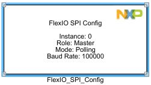
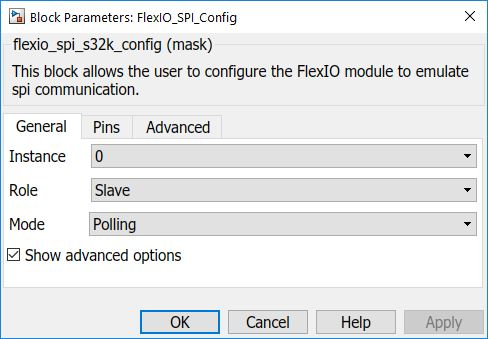
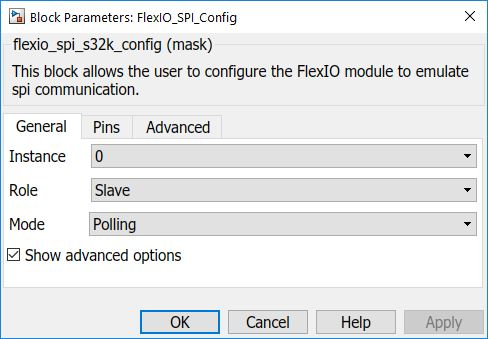
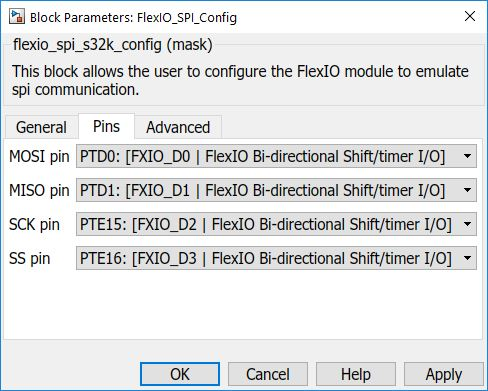
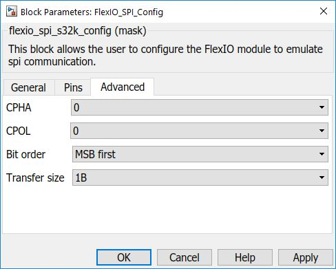

FLEXIO SPI Configuration Block
This block allows the user to configure the FlexIO module to emulate SPI communication (both master and slave mode).
The FlexIO module can run as master or slave and you can select on which pins to be used (from the flexio pins available on S32k), plus the baudrate(on master).
You can also set advanced properties like CPHA, CPOL, Bit order and Transfer size (in Advanced tab)
Block Image

Inputs:
- None
Outputs:
- None
Parameters and Dialog Box
The block dialog consists of the following tabs:
General
 

Instance
Select an instance of flexio to use (must be linked with transfer blocks used).
Role
Here you select if it is running as Master or as Slave.
Mode
Select either Polling or Interrupts mode, depending on what kind of Transfer block you want to use, as follows:
- Master / Slave transfer Blocks (blocking) - select POLLING
- Master / Slave transfer ISR Blocks (non-blocking) - select INTERRUPTS
Baud Rate
Select the baud rate for FlexIO SPI in Hz.
Note: Only available for Master role.
Pins
Pins
Select the flexio pins to be used from the dropdown list.
Advanced
CPHA
Determines the timing of the data bits relative to the clock pulses
- For CPHA=0, the "out" side changes the data on the trailing edge of the preceding clock cycle, while the "in" side captures the data on (or shortly after) the leading edge of the clock cycle. The "out" side holds the data valid until the trailing edge of the current clock cycle. For the first cycle, the first bit must be on the MOSI line before the leading clock edge.
- For CPHA=1, the "out" side changes the data on the leading edge of the current clock cycle, while the "in" side captures the data on (or shortly after) the trailing edge of the clock cycle. The out side holds the data valid until the leading edge of the following clock cycle. For the last cycle, the slave holds the MISO line valid until slave select is deasserted.
CPOL
Determines the polarity of the clock.
- CPOL=0 is a clock which idles at 0, and each cycle consists of a pulse of 1. That is, the leading edge is a rising edge, and the trailing edge is a falling edge.
- CPOL=1 is a clock which idles at 1, and each cycle consists of a pulse of 0. That is, the leading edge is a falling edge, and the trailing edge is a rising edge.
Bit order
Select the order on which bits are transmitted on the line (Most Significant Bit first or Least Significant Bit first).
Transfer size
Select the size of a frame, in bytes.
Block Dependency
- None
Block Miscellaneous Details
- None